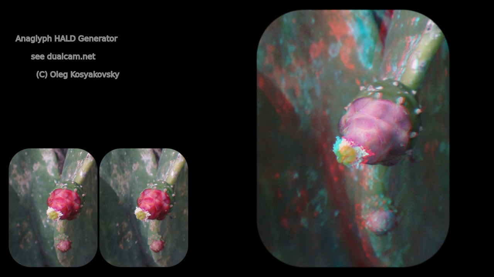
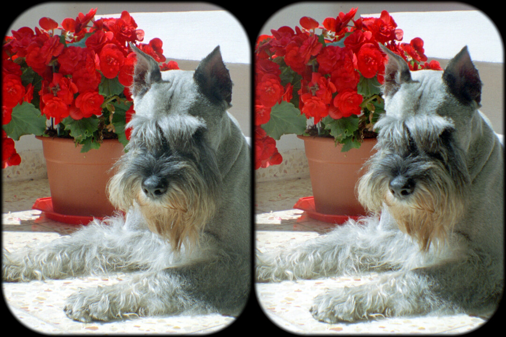
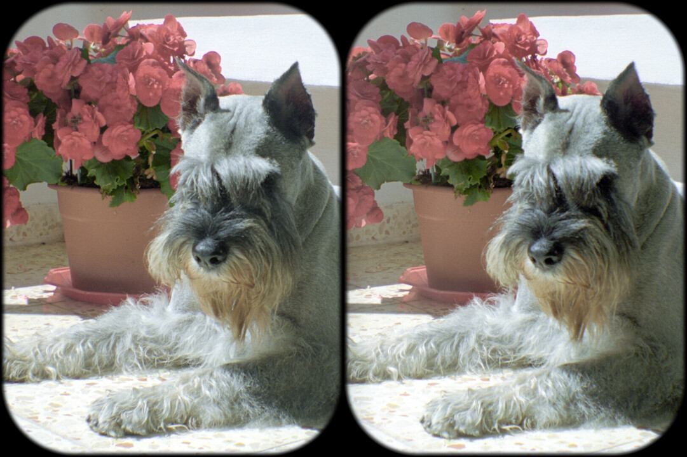
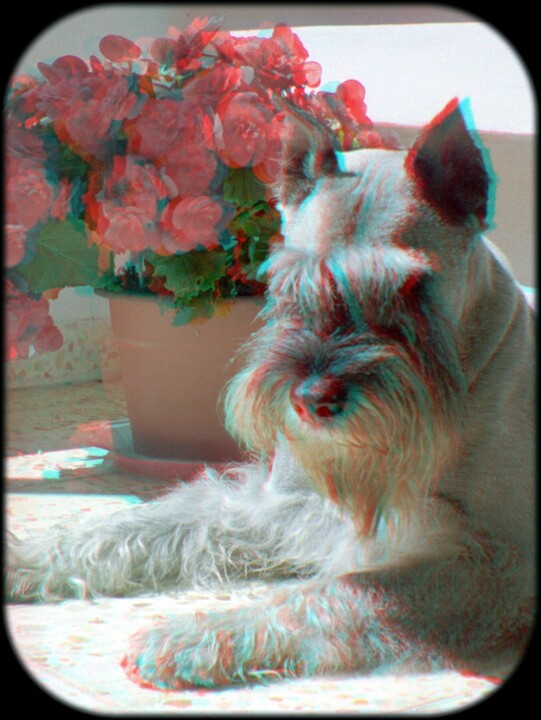

Anaglyph HALD Generator (Anahald) - Introduction and Navigation
By Oleg Kosyakovsky
Table of Contents
(Note on target audience: Anahald is intended for stereo-3d photography enthusiasts and professionals, and the documentation assumes sufficient familiarity with the domain.)

Figure 1: Original stereopair and anaglyph conversion facilitated by Anahald
Introduction - what and why
Anaglyph HALD Generator addresses the problem of retinal-rivalry in red-cyan stereo-3d anaglyph images.
The majority of the issues arise when the signal value in left-eye channel differs significantly from that of the right-eye channel. E.g. not only pure (saturated) or nearly pure colors are hard to see, but a much larger group of colors with big difference between magnitudes of red component on one side and green or blue component(s) on the other side.
There are several approaches that address the problem, with ready-to-use implementation accessible and without it, documented and undocumented.
So, why another anaglyph optimization? First and foremost, because the author had an idea for it :). Then, no approach ends up being best for all images (neither will Anahald); eventually having more choices is always beneficial.
What Anahald does? It generates color lookup tables that make colors in an image more friendly for use in red-cyan anaglyphs. It does so by replacing problematic colors with recognizable substitutions, while preserving original values for anaglyph-friendly colors.
For example, red is replaced by either pink or orange, depending on original ratio between blue and green.
The resulting table is fine-tuned through configuration file supplied as input to Anahald invocation. The file is in human-readable "INI" format - sequences of key-value pairs organized into sections by topics.
This way Anahald empowers its users to create variety of color-conversion tables according to their needs and tastes.
The intention is that these color-conversion tables are generic enough - so that a limited set of LUTs can serve all the images for specific user. The sample LUTs supplied with Anahald provide an example of being such.
What Anahald does not? The outcome using Anahald-generated color lookup tables will not always meet perfectionist's requirement of preventing retinal-rivalry as a phenomenon.
Specifics of the input configuration files and parameters they define are explained in Anahald Configuration Files and Control Parameters.
The resulting color-lookup table follows "HALD" standard; see the official website:
Hald Images, Clut Technology.
An all-important perspective related to Imagemagick could be found at:
https://www.imagemagick.org/Usage/color_mods/#hald-clut
How to use lookup tables made by Anahald?
There are various tools that apply HALD lookup tables to images, videos, or even digital-camera RAW files.
For stereo-3D the HALD is applied to a stereopair, e.g. before conversion to anaglyph. That's why it's worth saving the color-modified image in a lossless format like TIFF.
For processing still stereopairs, the author used "magick" (former "convert") command-line utility from "Imagemagick" suite.
- Note, the -gamma 1.0 placeholder does nothing, but shows the right place to add whatever color corrections - so that LUT application occurs in the end.
The invocation format to obtain color-processed stereopair is:
magick <INPUT-IMAGE-PATH> -gamma 1.0 <HALD-FILE-PATH> -hald-clut -depth 8 -compress LZW <OUTPUT-TIFF-IMAGE-PATH>
The invocation format to obtain ultimate red-cyan anaglyph from color-processed stereopair is:
magick <INPUT-IMAGE-PATH> -gamma 1.0 <HALD-FILE-PATH> -hald-clut -crop 50%x100% -swap 0,1 -define compose:args=20 -compose stereo -composite -depth 8 -compress LZW <OUTPUT-TIFF-IMAGE-PATH>
The Anahald distribution includes a BASH script for Linux and Windows that performs conversions of one stereopair with all sample Anahald LUTs - Scripts/apply_hald.sh . Run it without arguments to obtain command-line help.
- Tip: consider including an identity-hald (create with magick hald:16 HALD_FILENAME) to obtain unprocessed full-color anaglyph conversion as another option
- A similar but simpler DOS-batch script Scripts/apply_hald.bat is aimed at drag-and-drop-input-files kind of usage. It outputs ultimate anaglyphs into ANA/ subdirectory of the input stereopairs' location. Double-click or run it without arguments to obtain usage help.
Advanced users can enjoy Python-powered auto-choice of a suitable Anahald sample LUT. This utility creates one anaglyph per SBS stereopair - with the sample HALD LUT it "prefers".
For processing side-by-side videos, the author used "FFMPEG" command-line tool.
FFMPEG invocation format to apply a HALD-LUT to any video is:
ffmpeg -i <INPUT-VIDEO-PATH> -i <HALD-FILE-PATH> -filter_complex "haldclut" <OUTPUT-VIDEO-PATH>
FFMPEG invocation format to convert anamorphic-side-by-side video into red-cyan anaglyph with a HALD-LUT applied is:
ffmpeg -i <INPUT-VIDEO-PATH> -i <HALD-FILE-PATH> -filter_complex "[0:v]scale=iw*2.0:ih*1.0[out_0] , [out_0][1:v]haldclut , stereo3d=sbsl:arcc" <OUTPUT-VIDEO-PATH>
And what is the final result?
The example below demonstrates the original stereopair, the color-processed stereopair, and the full-color anaglyph made from the latter. The reader can easily imagine the amount of retinal-rivalry if a full-color anaglyph was made directly from the original image.

Figure 2: The original stereopair

Figure 3: The stereopair obtained by applying "anahald__oleg_ec" HALD LUT

Figure 4: Anaglyph image resulting from "anahald__oleg_ec" HALD LUT
And … is Anaglyph HALD Generator worth the hassle?
For the positive answer to prevail, the spectator meeting three conditions is paramount:
- to value partial achievements in color accuracy
- to invest in proper red-cyan glasses and other aspects of anaglyph viewing arrangements
- to tolerate occasional small remains of retinal-rivalry when those don't destruct the overall viewing experience - including depth perception and eye comfort
Anahald does allow to achieve a reasonable for the particular image trade-off between the remaining level of retinal-rivalry and color-quality preservation of the picture.
According to the author's experience, overall anaglyph viewing experience could be noticeably improved for absolute majority of stereopairs that suffer from retinal-rivalry and otherwise would be treated by half-color, Duboius, SPM or Suto method.
Site Navigation - what comes with Anahald?
- Command line utilities implemented in Tcl together with convenience wrappers for Windows and Linux:
- Four (4) pre-made HALD lookup tables that the author found useful, accompanied by Anahald configuration files to generate them:
- Anahald installation guide, including dependencies:
- Anahald invocation guide - how to (technically) invoke Anahald commands:
(e.g. command-line explanation; not the complete manual; the whole site is meant as the user guide)
- Control parameters' specification:
- Minimalistic incursion into all-important topic of glasses, screens, and other aspects of viewing arrangement. Explains how the intended viewing methods should have impacted picture-taking, and why the author ended up using two layers of anaglyph filters:
- Gallery of anaglyph images processed with the pre-made Anahald-generated LUT-s:
- Explanation of Anahald algorithm and control parameters:
- Suggestions and ideas for future study and development:
- Separate page dedicated to human-skin color - comparison of Anahald-based conversions with those available in StereoPhotoMaker:
- Automatic selector of Anahald LUT-s:
Contact information
For now, please direct your questions/suggestions/requests to email address anahald_contact@dualcam.net
More means of communication will come if needed.